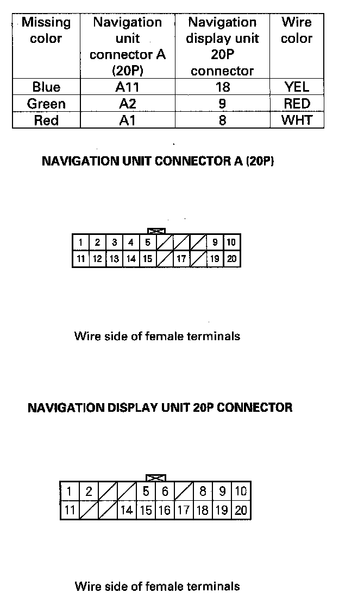
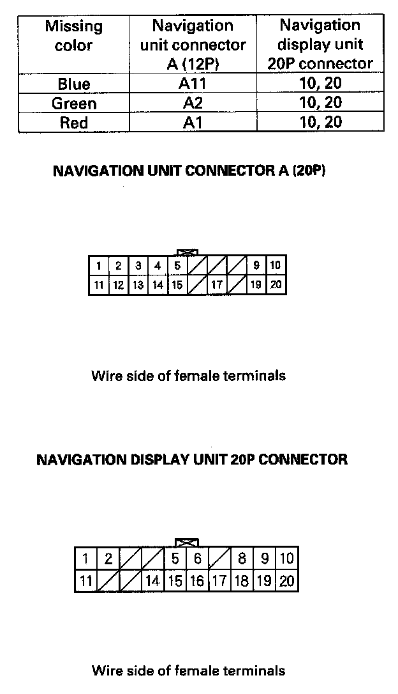

Picture is missing a color or tone or is an odd color
Picture is missing a color or tone or is an odd colorNOTE:
- Confirm the correct DVD color and version disc is installed in the navigation unit.
- Always check the connectors for poor connections or loose terminals.
- Before troubleshooting, get the navigation system anti-theft codes.
- After troubleshooting, enter the navigation system anti-theft codes.
- Check for aftermarket accessories that may interfere with the navigation system.
1. Go into the Diagnostic Menu, and use "RGB Color" test under Monitor Check.
Are the red, green, and blue colored circles shown?
YES - The system is OK at this time.
NO - Go to step 2.
2. Turn the ignition switch to OFF.
3. Disconnect navigation unit connector A (20P) and the navigation display unit 20P connector.
4. Check for loose terminals at navigation unit connector A (20P) and the navigation display unit 20P connector.
Are there loose terminals?
YES - Repair the terminal.
NO - Go to step 5.

5. Check for continuity between the appropriate terminals of navigation unit connector A (20P) and the navigation display unit 20P connector based on the missing color(s).
Is there continuity?
YES - Go to step 6.
NO - There is an open in the circuit between the navigation display unit and the navigation unit. Check for poor connections or loose terminals at the navigation display unit and navigation units. If a poor connection or loose terminal is found, replace the affected shielded harness.

6. Check for continuity between the appropriate terminals of navigation unit connector A (20P) and the navigation display unit 20P connector based on the missing color(s).
Is there continuity?
YES - There is a short to body ground in the circuit between the navigation display unit and the navigation unit. Replace the affected shielded harness.
NO - Replace the navigation unit. If the problem is still unresolved, replace the navigation display unit.